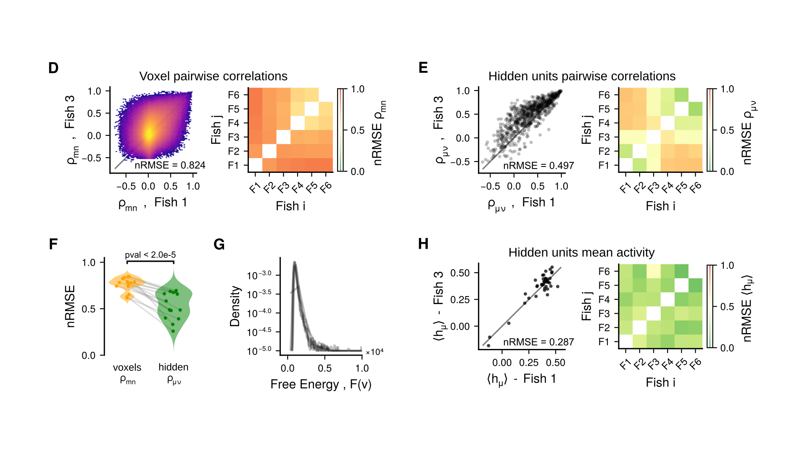
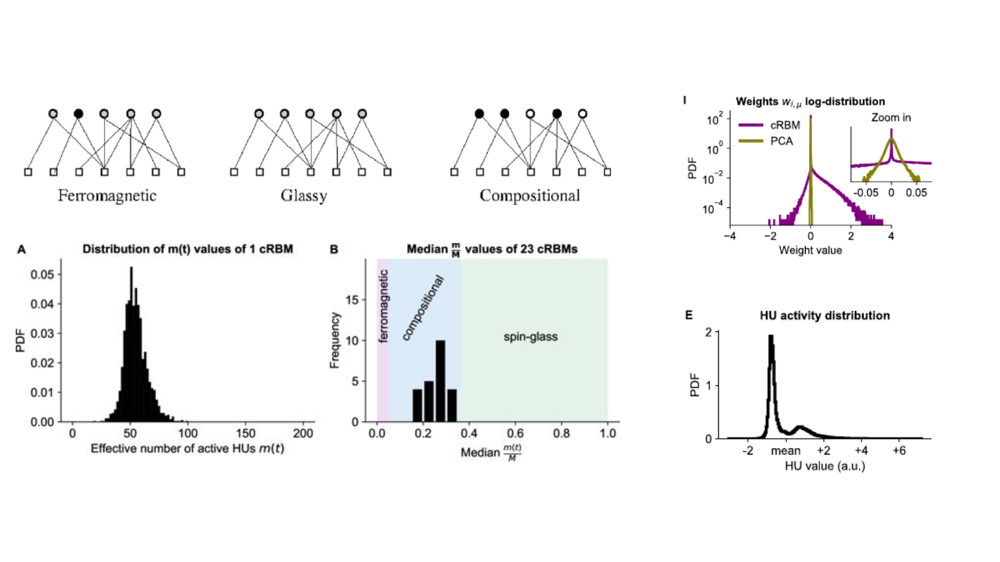
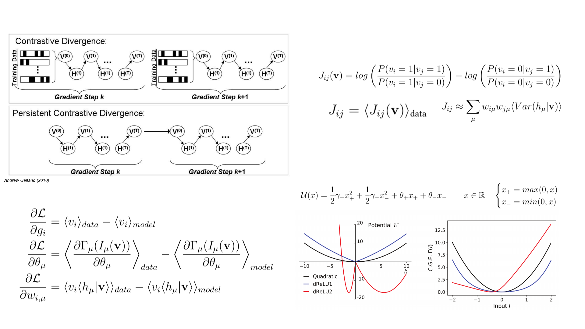
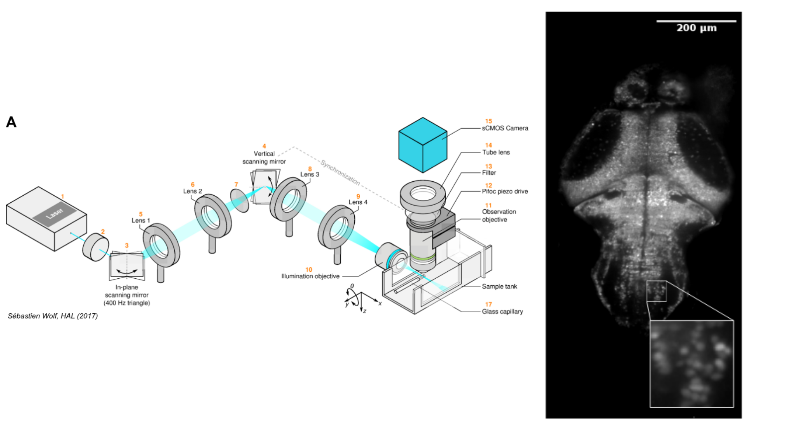
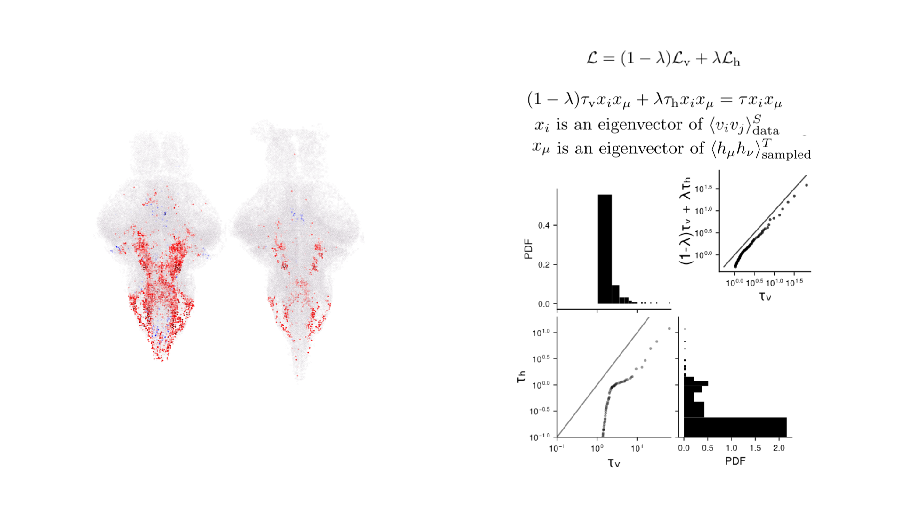
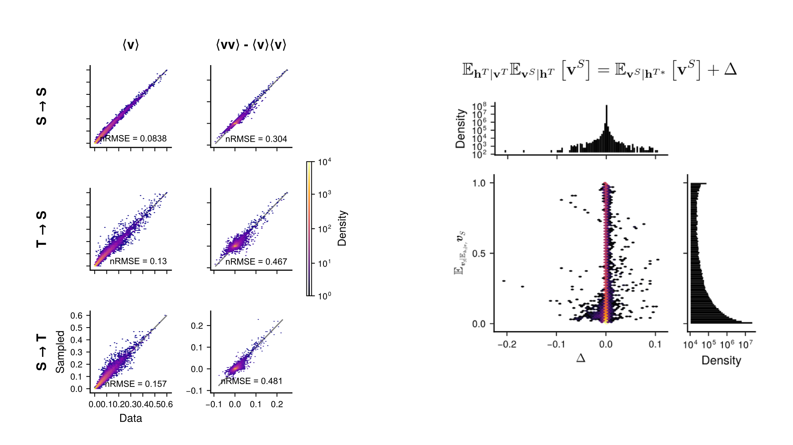
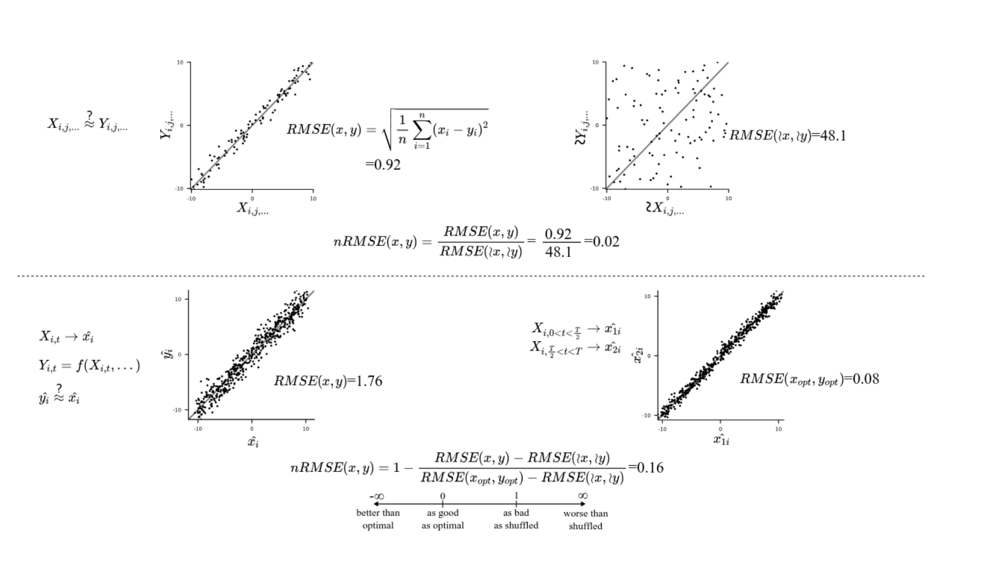
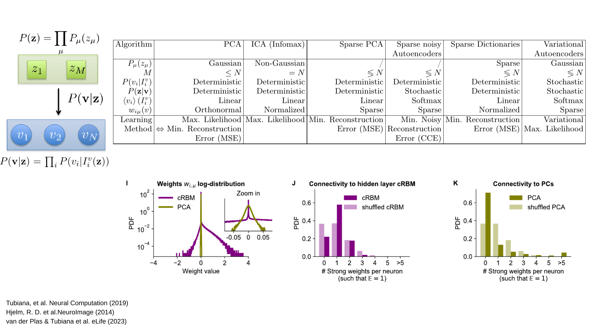
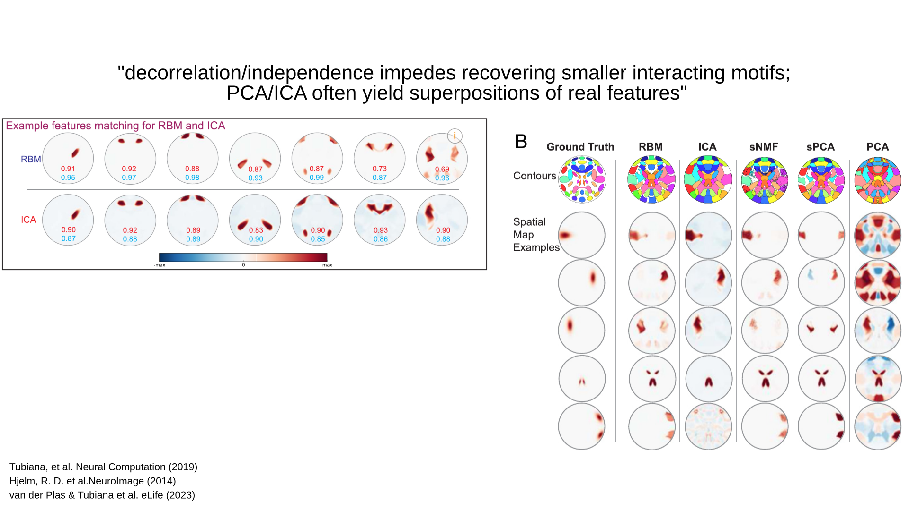

Recording Brain Activity
Zebrafish larvae and Light-Sheet Microscopy
Functional Brain Recordings
and Integrative Neuroscience
Motor Control
Sensory Integration
Connectomics
Spontaneous Brain Activity
Spontaneous Activity → P(v) → Brain's Fonctional Organisation
Restricted Boltzmann Machines
A Probabilistic Model
Restricted Boltzmann Machines
Representing Brain Activity as a Composition of Cell Assemblies
Thijs van der Plas
Jérôme Tubiana
Aligning Representation Across Individuals
Method : Latent-aligned RBMs
Aligning Representation Across Individuals
Method : Latent-aligned RBMs
Jorge Fernández
⠀
de Cossío Díaz

- Converge faster (×10)
- Converge more reliably
Aligning Representation Across Individuals
Hidden Units map to Stereotypic Neuronal Populations
Aligning Representation Across Individuals
Translating Activity from one Fish to Another
- Shared representation space
- Generative Model
⠀
⇒ Same encoding ?
⠀
⇒ Translation
Aligning Representation Across Individuals
Translating Activity from one Fish to Another
Aligning Representation Across Individuals
Translated Activity is Probable under the Recipient Model
Conclusion
Supp : Voxelization Method

Supp : Voxelization Results

Supp : Compositionality

Supp : RBM methods

Supp : LightSheet Microscopy

Supp : Student's lower weights

Supp : Student Statistics & Couplings

Supp : Student init+training + hidden correlations

Supp : Binary Layer Composition

Supp : Translation Statistics & Mapping methods

Supp : nRMSE

Supp : RBM vs. PCA/ICA/VAEs

Supp : RBM vs. PCA/ICA/VAEs
